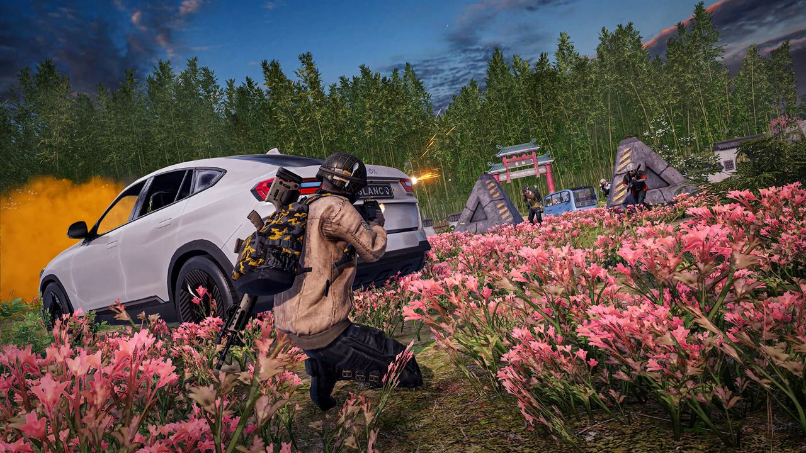

Micro stutters and frame drops are not your GPU's fault — they are a pile of stale shader caches, wrong config values and zero visibility into frame time. PUBG Stutter Fix cleans the cache, tunes the config and logs the difference, so a smooth frame is something you can measure, not just feel.
Shader cache cleanup Frametime logger No telemetry
✓ Shader cache cleanupconfig optimizer✓ Frametime loggerCPU / GPU presets! backup before every changefully offline✓ no telemetryWindows 10 / 11✓ Shader cache cleanupconfig optimizer✓ Frametime loggerCPU / GPU presets! backup before every changefully offline✓ no telemetryWindows 10 / 11
Fixes
Six levers for a smoother frame
Each fix targets one source of stutter. You pick the presets, the tool applies them, and the frametime log shows whether they worked.
Shader cache cleanup
Every driver update and patch leaves compiled shaders behind. A stale cache forces the game to recompile mid-fight and the frame hitches. One click wipes it so the next build compiles once, cleanly, before the match instead of during it.
Config optimizer
Frame pacing lives in the config files — polling rates, frame caps and texture streaming. The optimizer reads your values, flags the ones that cause micro stutter, and writes back a tuned set with a backup kept alongside.
Frametime logger
Graph frame time during a real match and read the 1% lows afterwards — the frames that actually cause the visible hitch.
CPU / GPU presets
Low-end and high-end presets that balance the load between your CPU and GPU, so one component does not choke the other.
Backup & restore
Every change is saved as a timestamped backup first. One click puts your original config back exactly as it was.
Patch-ready
Every game update shifts the config. The tool re-validates your values after a patch and flags anything that changed.
How it works
Three steps to a stable frame
01
Clean & tune
Wipe the stale shader cache and apply a tuned config preset.
02
Log the frame
Run a match while the frametime logger records every hitch.
03
Compare
Read the before-and-after graph and keep the preset that helped.
Transparency
You see the data. We see nothing.
✓The logger records frame time during real matches, not a synthetic benchmark.
✓1% lows and stutter count are separated, so one bad frame does not hide in an average.
✓Presets are reversible — a timestamped backup is written before every change.
✓Nothing runs in the background and nothing is sent over the network.
No telemetryNo accountFully offline

PUBG: BATTLEGROUNDSthe game it is tuned for
Screenshots
From the game itself
Real PUBG: BATTLEGROUNDS gameplay — the situations where a dropped frame decides the round.
Unpack with the password above, then run the app from the extracted folder. The file is updated between releases, so always take it from this page.
FAQ
Before you download
Does it modify the game or inject anything?
No. It cleans the shader cache and edits local configuration files, then logs frame time. It never injects DLLs, never touches game memory and never runs while you are not using it.
Will cleaning the shader cache cause stutters at first?
The first match after a cleanup recompiles shaders, which can cause a few seconds of higher load at the start. After that the cache is fresh and frame time is steadier than with a stale cache.
Can I undo a config change?
Yes. Every change writes a timestamped backup first. The restore button puts your original values back in one click.
Do I need a high-end PC?
No. The CPU/GPU presets cover low-end machines, and the logger helps you find which setting actually causes your drops instead of guessing.
Does it work while the game is running?
Apply presets before you launch, then run the logger during a match. The tool is not an overlay and does not sit on top of the game.
Is anything sent over the network?
Nothing. The app is fully offline: no account, no telemetry, no updates pushed to you. You download the build, and that is the only network step.